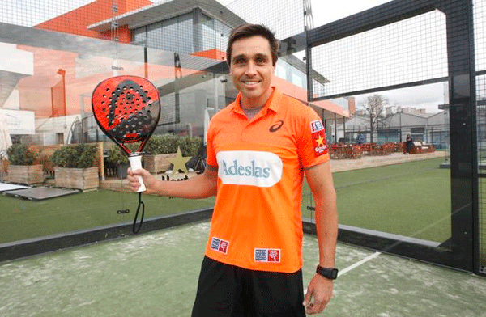
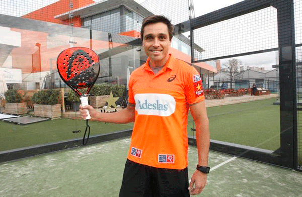

Mundo Pádel
Todo sobre el deporte que crece cada día más

Todo sobre el deporte que crece cada día más
Este sitio está dedicado a los fanáticos del pádel. Acá vas a encontrar información sobre calzado, paletas, consejos, y mucho más para mejorar tu juego.

 

El pádel nació en México en el año 1969, cuando Enrique Corcuera, un empresario mexicano, decidió adaptar una cancha de tenis en su casa de Acapulco para crear un nuevo deporte. Debido al espacio limitado, construyó paredes en el fondo y los laterales, y así dio origen a una modalidad distinta que combinaba elementos del tenis y del squash.
Poco tiempo después, el deporte llegó a España, gracias a Alfonso de Hohenlohe, un amigo de Corcuera que lo conoció durante un viaje a México. Fascinado por esta nueva disciplina, construyó las primeras canchas de pádel en Marbella en la década de 1970, lo que marcó el inicio de su popularidad en Europa.
Durante los años 90, el pádel se expandió rápidamente por Argentina, convirtiéndose en uno de los países con mayor cantidad de jugadores y canchas. Desde entonces, su crecimiento fue constante, con millones de aficionados en América Latina, Europa y otras regiones.
Hoy en día, el pádel es un deporte profesional y amateur en constante expansión, con torneos internacionales como el Premier Padel y el World Padel Tour, y con cada vez más presencia en medios, clubes y redes sociales.